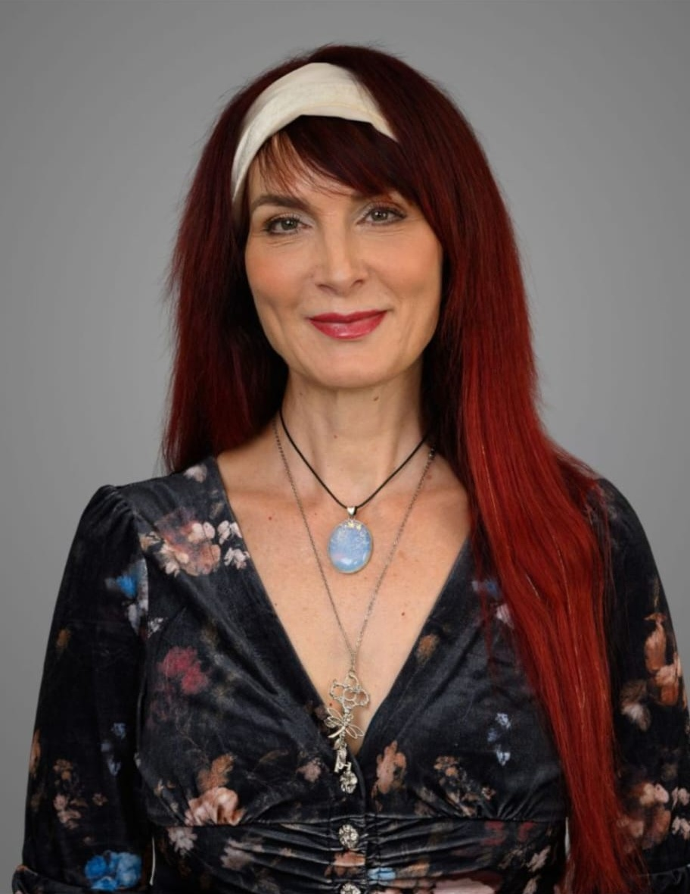

Energiearbeit · Körperwahrnehmung · Kreativer Ausdruck
Zwischen Verstehen und Erleben liegen oft Welten.
Ich begleite dich auf deinem persönlichen Weg der Veränderung mit Energie und Körperarbeit.

Vielleicht erkennst du dich hier wieder.
Du hast schon vieles verstanden und darüber gesprochen – und dennoch hat sich wenig verändert?
Vielleicht spürst du, dass Worte allein nicht mehr ausreichen.
Oder dich beschäftigt eine konkrete Lebensfrage, ein kleineres Thema oder du wünschst dir einfach eine Reinigung und Klärung deines Energiefeldes.
Vielleicht wünschst du dir auch mehr innere Balance und neue Kraft, um dein Leben bewusst, selbstbestimmt und kreativ zu gestalten.
Du möchtest dich als Einheit von Körper, Geist, Emotionen und Energie erleben und Veränderung nicht nur verstehen, sondern auch erfahren.
Dann bist du hier richtig.
Was auch immer dich persönlich bewegt – dein Anliegen hat hier Raum.
Schreib mir gerne ganz unverbindlich, was dich beschäftigt.

wegdervierwinde.de+49 1573 4359358
energie.medizin@web.de
Instagram @katharinawegdervierwinde
Die Wurzeln meiner Arbeit
Meine Arbeit ist in den indigenen Heiltraditionen der Anden und des Amazonas verwurzelt und fand durch Dr. Alberto Villoldo und die von ihm gegründete Four Winds Society ihren Weg in die westliche Welt.
Was macht die Energiearbeit in dieser Tradition besonders?
Die alte Weisheit der indigenen Heilkunst beruht auf einem tiefen Verständnis von Energie, Natur und der Ganzheit des Menschen.
Diese Energiearbeit setzt dort an, wo Muster ihre Spuren hinterlassen: im Körper, im Gewebe, im Nervensystem und im Energiefeld.
Klären wir das Feld, kann sich auch unser Blick auf die Welt verändern – und damit die Art, wie wir unserem Leben begegnen.
Die vier Winde
Die vier Winde werden im Medizinrad durch Schlange, Jaguar, Kolibri und Adler verkörpert. Sie stehen für vier archetypische Kräfte, die als Fähigkeiten und Ressourcen in uns wirken und uns auf unserem persönlichen Weg der Veränderung begleiten.
Was bedeutet Heilung für mich?

Heilung ist eine Reise, keine Intervention.
Niemand kann diesen Weg für einen anderen Menschen gehen.
Aus der schamanischen Haltung heraus sehe ich mich als Wegbegleiterin auf deiner persönlichen Reise. Ich ermutige dich, ehrlich hinzusehen und anzunehmen, was sich zeigt.
Was bewusst wird, kann seine Macht über uns verlieren. Darin können Wandlung, innere Kraft und Selbstermächtigung entstehen.
Wie die Passionsblume sich Schicht für Schicht öffnet, geschieht Heilung in ihrem eigenen Rhythmus – von innen heraus.
Klar. Achtsam. In deinem Tempo.
Ich begleite dich dabei mit offenem Herzen, Präsenz, Feinfühligkeit, großem Respekt vor deinem individuellen Weg und tiefem Vertrauen in dein Potenzial.